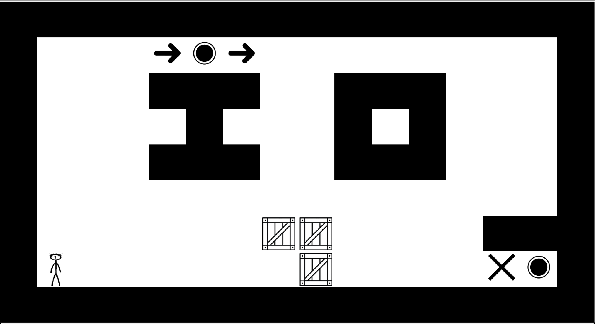
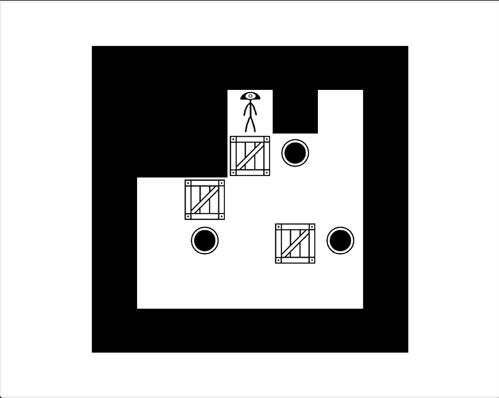
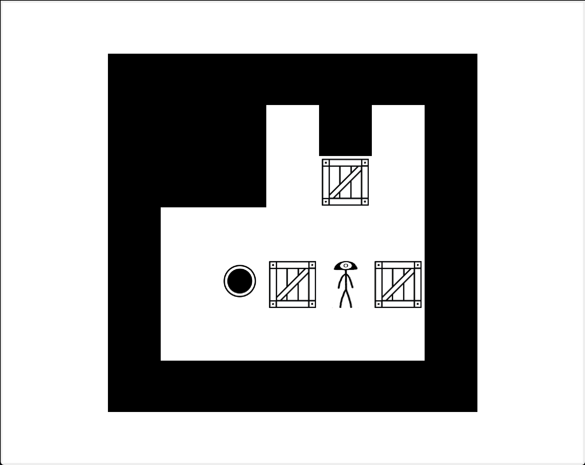

Vue d'ensemble
sokIOban est un puzzle game inspiré du classique Sokoban, implémenté en Java avec l'interface Swing. Le nom et le design visual sont une référence à mon projet It Takes IO, fusionnant les concepts de signaux binaires avec la mécanique de puzzle poussée de caisses. L'objectif : pousser toutes les caisses vers leurs emplacements respectifs en naviguant des niveaux à difficultés croissantes.
Mécaniques de jeu
- Déplacement: Flèches directionnelles.
- Objectif: Pousser les caisses sur les zones de dépôt.
- Rechargement: Touche R pour recommencer le niveau.
- Menu: Touche Esc pour revenir au menu principal.
- Sélection personnage: Menu de sélection au démarrage.
Galerie


Architecture technique
Langages et Outils
- Java: Langage principal avec Swing pour l'interface.
- Swing: UI réactive avec pattern Observer pour rafraîchissement.
- ImageIO: Chargement et gestion des assets visuels.
Structure modulaire (par paquets)
- Cell: Types de cellules (mur, sol, zone de dépôt).
- Entity: Joueur, caisses et entités mobiles.
- Vue: Composants visuels et rendering.
- Enum: Énumérations (directions, états du jeu).
Fichiers clés
- MF.java: Fenêtre principale et orchestration.
- Menu.java: Système de menu (conçu via formulaire Menu.form).
- Grid.java: Logique centralisée du jeu (grille, niveaux, cellules, entités).
- Player.java: Entité joueur et mouvements.
- Sound.java: Gestion intégration d'audio.
Gestion des ressources
- Niveaux: Format texte stockés dans le dossier
levels/. - Visuels: Images (PNG) du dossier
assets/. - Audio: Fichiers musiques du dossier
musics/. - Chemins relatifs: Gestion robuste des ressources indépendante du répertoire courant.
Points clés d'apprentissage
- Architecture Model/View: Séparation nette des responsabilités.
- Gestion d'assets: Chargement dynamique d'images et ressources.
- Pattern Observer: Synchronisation réactive entre modèle et vue.
- Résolution de chemins relatifs: Portabilité des ressources.
- Layout dynamique: Ajustement automatique des cellules à la fenêtre.
- UI en formulaire: Swing Forms pour accélération du développement.
- Intégration audio: Gestion basique de sons et musiques.
- Conception de niveaux texte: Systèmes simples et extensibles.